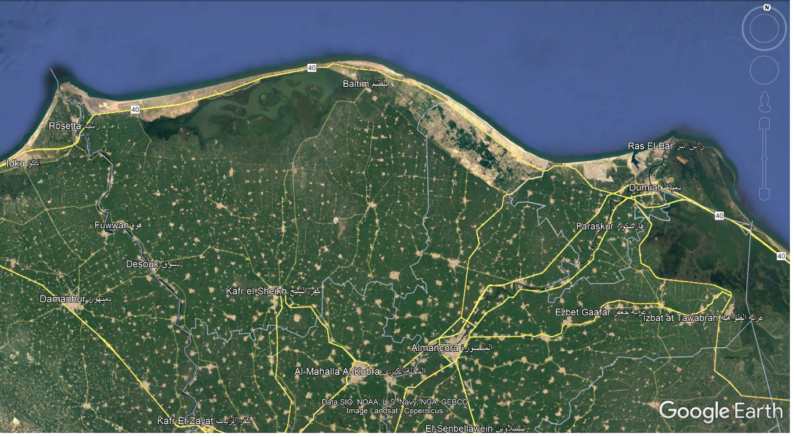

A lenda
Após a morte do Imperador grego Alexandre, suas terras foram divididas entre seus generais e Ptolomeu ficou com o território do Egito onde se corou como Faraó. Neste território o faraó Ptolomeu havia mandado reunir os tesouros dos faraós anteriores e colocou na pirâmide de Quéops uma inscrição em grego copta uma dica de onde encontrar o seu tesouro.
Por muito tempo isso foi só uma lenda, até que um grupo de arqueólogos que estudavam as inscrições desta pirâmide notaram algumas letras diferentes e ao pesquisarem notaram que se tratava de grego copta, reuniram as letras e a seguinte frase se formou: “as chaves para o conhecimento e riquezas repousam em uma rosa grande e forte as margens do Nilo”. Partiram o três para essa investigação...
Qual é a cidade que a inscrição diz?
1 - Ras Elbar
2 - Rosetta